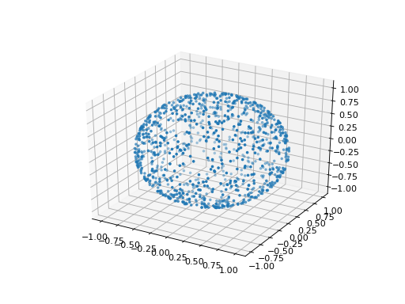

Sphere sampling method¶
Within the context of the First and Second Order of the Reliability Method, the Strong Maximum Test helps to check whether the design point computed is:
- the true design point, which means a global maximum point,
- a strong design point, which means that there is no other local maximum verifying the event and associated to a value near the global maximum.
The Strong Maximum Test samples a sphere in the standard space. the gaussian random sampling technique used is described hereafter.
- sampling of points in according to a radial
distribution: we generate
 independent standard normal
samples,
independent standard normal
samples, - projection of the points onto : we map the points
different from the origin using the transformation
such as
where
 is the radius of the sphere of interest. This
transformation does not depend on the angular coordinates. Thus, the
generated points follow a uniform distribution on .
is the radius of the sphere of interest. This
transformation does not depend on the angular coordinates. Thus, the
generated points follow a uniform distribution on .
(Source code, png, hires.png, pdf)
{kind=link}
{kind=link}

API:
- See
StrongMaximumTest - See
FORM
References:
- Luban, Marshall, Staunton, 1988, “An efficient method for generating a uniform distribution of points within a hypersphere,” Computer in Physics, 2(6), 55.